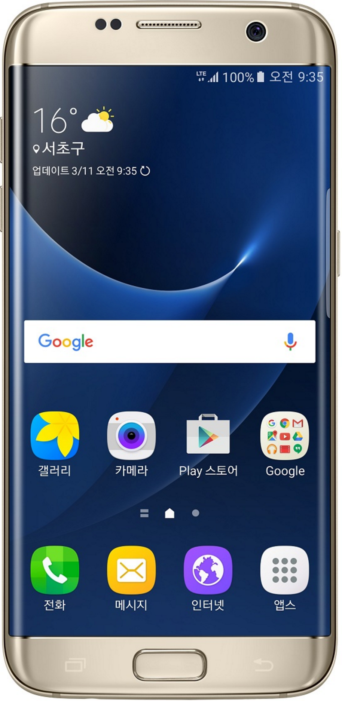

역사
스마트폰은 PC와 같은 기능과 더불어 고급 기능을 제공하는 휴대 전화이다. 응용 프로그램 개발자에게는 표준화된 인터페이스와 플랫폼을 제공하여 완전한 운영 체제 소프트웨어를 실행하는 전화일 것이고, 다수의 일반인에게는 전자 우편·인터넷·전자책 읽기 기능·내장형 키보드·외장 USB 키보드·mini-HDMI 단자 등을 갖춘 고급 기능이 있는 전화로 비칠 수 있다. 다시 말해 스마트폰은 전화 기능이 있는 소형 컴퓨터라 볼 수 있다.
최초의 스마트폰은 IBM 사이먼으로 추정된다. IBM사가 1992년에 설계하여 그 해에 미국 네바다 주의 라스베이거스에서 열린 컴댁스에서 컨셉 제품으로 전시되었다.[5] 1993년에 대중에게 공개되었고 벨사우스에게 팔렸다. 휴대 전화의 기능을 할 뿐 아니라 주소록, 세계 시각, 계산기, 메모장, 전자 우편, 팩스 송수신, 오락까지 할 수 있었다. 전화 번호를 누르기 위한 물리적인 단추는 없었지만 터치 스크린을 사용하여 손가락으로 전화 번호를 입력할 수 있었다. 또, 팩시밀리와 메모를 수행하기 위해 부가적인 스타일러스 펜을 사용할 수 있었다. 문자열 또한 화면 상의 키보드로 입력이 가능하였다. 오늘날의 표준에서 사이먼은 매우 저가 제품으로 여겨져 있으나 당시에는 믿기지 못할 정도로 기능이 고급이었다고 평가 받았다.
안드로이드폰
안드로이드(영어: Android)는 휴대 전화를 비롯한 휴대용 장치를 위한 운영 체제와 미들웨어, 사용자 인터페이스 그리고 표준 응용 프로그램(웹 브라우저, 이메일 클라이언트, 단문 메시지 서비스(SMS), 멀티미디어 메시지 서비스(MMS)등)을 포함하고 있는 소프트웨어 스택이자 모바일 운영 체제이다. 안드로이드는 개발자들이 자바 와 코틀린 언어로 응용 프로그램을 작성할 수 있게 하였으며, 컴파일된 바이트코드를 구동할 수 있는 런타임 라이브러리를 제공한다. 또한 안드로이드 소프트웨어 개발 키트(SDK)를 통해 응용 프로그램을 개발하는 데 필요한 각종 도구와 응용 프로그램 인터페이스(API)를 제공한다.
안드로이드는 리눅스 커널 위에서 동작하며, 자바와 코틀린으로 앱을 만들어 동작한다.
또한 다양한 안드로이드 시스템 구성 요소에서 사용되는 C/C++ 라이브러리들을 포함하고 있다.
안드로이드는 기존의 자바 가상 머신과는 다른 가상 머신인 안드로이드 런타임을 통해 자바와
코틀린으로 작성된 응용 프로그램을 별도의 프로세스에서 실행하는 구조로 되어 있다.
2005년에 안드로이드 사를 구글에서 인수한 후 2007년 11월에 안드로이드 플랫폼을 휴대용
장치 운영 체제로서 무료 공개한다고 발표한 후 48개의 하드웨어, 소프트웨어, 통신 회사가
모여 만든 오픈 핸드셋 얼라이언스(Open Handset Aliance, OHA)에서 공개 표준을 위해
개발하고 있다. 구글은 안드로이드의 모든 소스 코드를 오픈 소스 라이선스인 아파치 v2
라이선스로 배포하고 있어 기업이나 사용자는 각자 안드로이드 프로그램을 독자적으로 개발을
해서 탑재할 수 있다. 또한 등록한 개발자들이 소비자에게 응용 프로그램을 판매할 수 있는
구글 플레이 스토어를 제공하고 있으며, 이와 별도로 각 제조사 혹은 통신사별 응용
프로그램 마켓이 함께 운영되고 있다.
아이폰
애플은 2007년에 iOS 기반으로 아이팟 휴대 전화, 모바일 인터넷이라는 세 가지 주요 기능을 합친 스마트폰인 아이폰을 출시했다. 그 뒤, 2008년에는 3세대 통신망을 지원하는 아이폰 3G를 출시했고, 이 제품을 더 업그레이드해 2009년에 아이폰 3GS를 출시했다. 2010년에는 아이폰 4를 출시했고, 2011년에 아이폰 4S를 출시하였으며, 2012년에는 아이폰 5를 출시하여 아이폰 시리즈를 이어오고 있고, 2013년 9월 아이폰5S와 5C 출시와 동시에 iOS7을 공개했다. 2014년 9월 아이폰6와 아이폰6 플러스를 출시했다. 아이폰은 애플의 스마트폰 os인 ios가 ios8 으로 업데이트 되면서 타임랩스 기능이 추가되었다. 그리고 애플은 스마트폰이 활성화될 수 있었던 '스토어'라는 개념을 도입해 적용한 회사이기도 하다 그리고 2015년 9월에는 아이폰 6s와 아이폰6s+를 출시하였다. 3D터치(포스터치) 기능이 들어가고 화소도가 올라갔으며 전체적인 성능이 올라갔다. 로즈골드색이 추가되었다. 아이폰은 세계 스마트폰 시장 수익의 94%를 차지한다. 2016년 7월 28일에는 스마트폰 최초로 누적 판매량 10억대를 돌파하였다.
샘플



설문 조사
Copyright 2017 by Kitae